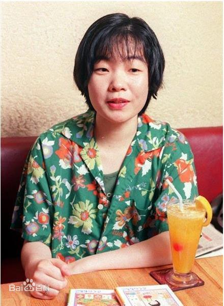
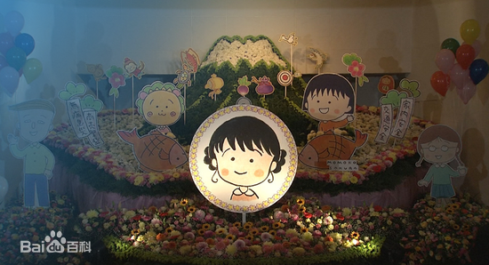

人物经历
早年时期
樱桃子出生于静冈县清水区一个卖蔬果家庭里，原名三浦美纪。 家境并不富裕。她不仅时常认为卖蔬果不够酷，而且还不喜欢吃卖剩下的蔬果。 1972年至1984年，就读入江小学校、清水第8中学校、清水西高校。
从学校毕业后，她曾进到一家公司的营业部工作过两个月，那时她就开始利 用业余时间画漫画。因为画画，樱桃子时常熬到了半夜，导致白天精神困倦， 甚至打瞌睡的时候还不小心磕到了电脑。由于她晚上的睡眠严重不足， 严重影响了本职工作，于是老板就指责她，随后她脱口回答 的答案使她离开了工作转入了漫画行业。
漫画时期
1984年，年仅19岁的樱桃子以自身经历为蓝本， 向集英社出版的杂志《RIBON》投去一篇以“教师”为主题创作的短篇漫画，从而正式出道。
1986年，开始用笔名樱桃子，以童年时期的经历为蓝本开始绘画漫画《樱桃小丸子》， 同时，在杂志《RIBON》连载漫画《樱桃小丸子》。
1991年，出版第一本随笔集《桃子罐头》（集英社）。
1999年，创立杂志《富士山》（新潮社）。
2005年，为20周年的纪念、到各地进行原画展“さくらももこワールド 20年の轨迹展”。
2006年，为《樱桃小丸子》电视真人版连续剧编辑第一话剧本。
2007年，《樱桃小丸子》：在日本中日新闻、东京新闻、北陆中日新闻、日刊县民福井、 北海道新闻、西日本新闻、河北新报、中国新闻、德岛新闻朝刊开始连载。8月1日在新潟日报连载开始。
2017年，担任真人版电视剧《樱桃小丸子》的选角工作。
个人生活
樱桃子是家中次女，她有一位姐姐。而樱桃子的爸爸在现实生活中也喜欢恶搞她。 樱桃子的爷爷是一位性格冷淡，脾气暴躁的人，樱桃子和姐姐都很讨厌他。
1989年，与《RIBON》编辑宫永正隆结婚。1994年，长男诞生。1998年，与宫永正隆离婚。
2003年，与一位插画家うんのさしみ再婚。2004年，次男诞生。
2018年8月15日，《樱桃小丸子》的原作者樱桃子因乳腺癌逝世，享年53岁。 11月16日上午，樱桃子的告别仪式在东京港区的青山葬仪所举行， 来自日本演艺、声优、出版等各界人士约1000人前来出席。
